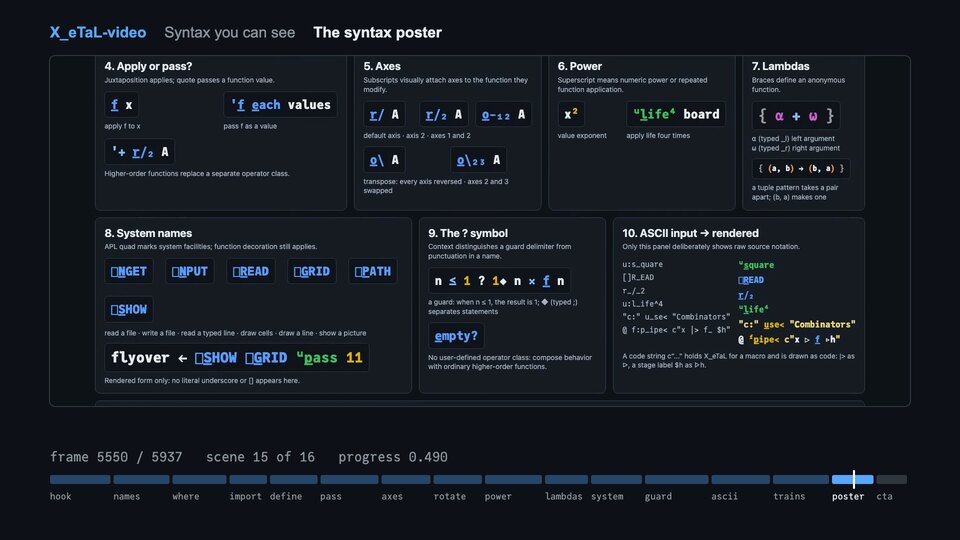

Short videos about X_eTaL, the eXperimental Extensible Typed Array Language, built from its live demos: short demos, and longer tutorials on the language. They play from the softwarewrighter channel on YouTube.
Every video here is data: a lesson file, a schedule and animation computed by X_eTaL itself for every frame at once, drawn by one Remotion composition, and narrated in the author's cloned voice. Shorts (two and a half minutes or less) are portrait; longer videos are landscape.

Coming to YouTube3:18
Syntax you can see
An introduction to reading X_eTaL, panel by panel after its syntax poster: an underline marks a function, a small letter above says where a name came from, a quote passes a function, small numbers pick an axis or a power, a box marks the system, a question mark guards, and square brackets make a train. Ends on the poster itself.
Three bodies chasing each other round a figure-eight, with no loop over pairs: every pair's displacement is one table, every pull one expression, every acceleration one reduce. Ends on the live page.
The Mandelbrot set with no loop over pixels: a number for every pixel by broadcasting, one step for all of them at once, and the set appearing as the step repeats. Ends on the live page.
The sequel to the intro: a name is bound once in its scope, a name that changes ends in an exclamation mark, and so does an effect; the prefixes and conventions behind a name; shadowing; then the fine points of arguments: omega only, alpha and omega, named and ignored parameters, patterns, currying, a function of nothing, and the types X_eTaL infers for all of them.
Conway's Game of Life as one line of X_eTaL, taken apart: nine shifted copies of the board, their sum, one comparison. Every board is an array X_eTaL printed.
How these videos are made: a lesson is data, X_eTaL computes the schedule and every frame's animation at once, and the numbers on screen are the video's own.
One head of attention, the heart of a transformer, with no loop over words: every query against every key in one matrix product, a softmax by row, and each word's output a weighted mix of the words it looks at. Ends on the live page.
A sudoku solved with no loop over cells: the rules as a table of units, every cell's candidates as one mask, every single found at once, and a move as a mask added to the grid, repeated until nothing changes. Ends on the live page.
A heart drawn by circles turning on circles, with no loop over circles: the angles are one outer product, the transform two matrix products, and one running sum along the chain gives the curve rebuilt from every number of circles at once. Ends on the live page.
Lights out with no loop over the board: a press is a plus-shaped mask, one row of a table of all twenty-five presses; a move is the board plus that mask, mod 2, every light at once; and the solver is that table reduced mod 2. Ends on the live page.
Three hundred points find their five clusters with no loop over points: every point's distance to every center is one table, the nearest center one reduce, the new centers means by group. A poor start gets stuck, a far-apart one does not. Ends on the live page.
Throwback Thursday: A'70, APL\360 printing on green-bar paper at an IBM 2741's own pace, in 3D on a model from console-3D, on the way to a virtual computer history museum.
Array languages, episode 1: thinking in whole arrays instead of one element at a time, where the idea came from (APL, J, K, BQN), and what this typed array language is trying to do.
Array languages, episode 2: map, filter and reduce as whole-array operations in place of a loop, a mask to filter and to count, Rust iterator chains compared, and three steps composed.
Array languages, episode 3: scalars, vectors, matrices and a rank 3 array; shape, rank and axes; reduce, rotate, reverse and transpose along an axis, the axis written out; ravel back to rank one; tensors in machine learning and on GPUs.
Array languages, episode 4: when arrays of different shapes meet. Scalar extension, the same shape, and the error otherwise in X_eTaL; saying how with reshape, transpose, rank and table; APL, J, BQN, K and NumPy compared.
Array languages, episode 5: thinking without loops. Running totals with a scan, adjacent changes by shifting, normalizing with an aggregate then each item, counting occurrences with unique and a table; then positions, membership, moving windows and sorting by a key; each beside the loop it replaces, and what it costs.
Array languages, episode 6: APL, J, K, BQN and X_eTaL side by side. Running totals, reverse, reading order and a mean as a train in all five; dynamic types against static, inferred ones; and X_eTaL source as typed and as drawn.
The X_eTaL assembly cell, simulated in the browser, builds a whole 555 LED blinker: the chip in the vise, jumpers between its legs, each resistor and capacitor bent, laid along its pin, soldered and trimmed, the light, the battery snap, and a check against the netlist. At about four times speed, the whole UI showing.